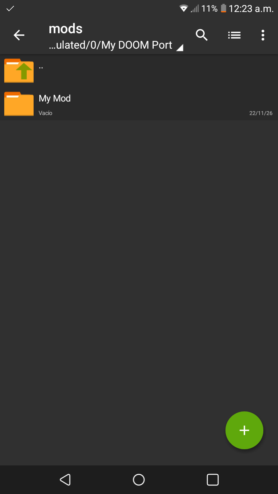
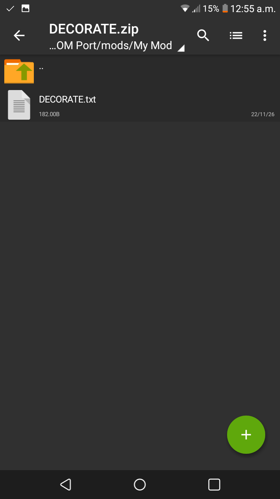
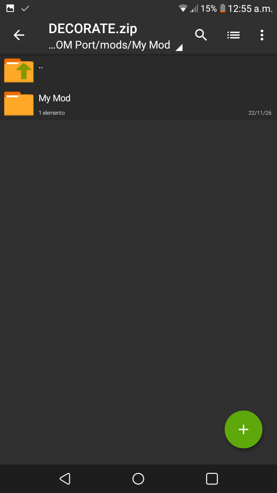
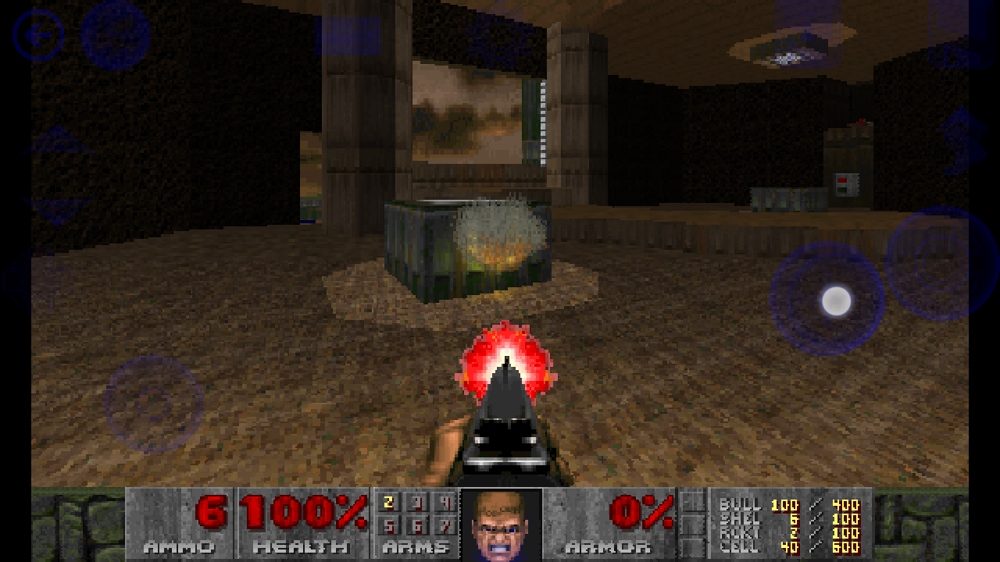

¿Have you ever wondered if you could make a DOOM Mod on Android?
It is almost imposible, but i've found a way to do it!
Now that we know the tools we need to use, let's get straight to the point.
We're going to create a folder, with our mod name. For example, i'll create a folder called "My Mod".

This folder will be the folder where we will place all our files (including sprites, sounds, etc.).
We'll now proceed to make our first mod using DECORATE.
In our folder, create a file called DECORATE.txt. This is the file where we can put all our customizations and can be referenced later in the game. Inside the file, add the next text, i will documentate everything of the code:
ACTOR MyShotgun : Shotgun replaces Shotgun
{
States
{
Fire:
SHTG A 1 A_FireShotgun
SHTG A 1 A_ReFire
Goto Ready
}
ACTOR MyShotgun: This registers a new Actor on the game.
Shotgun replaces Shotgun: This makes the actor inherit from the Shotgun actor (Doom Shotgun), and then replaces it with our custom shotgun.
States { Fire: ... }: This defines the weapon states. We are only changing the Fire state (The state activates when the player presses the fire button on game).
SHTG A 1 A_FireShotgun & A_ReFire: SHTG A is the sprite used for that tick. 1 is the amount of time in ticks that the sprite stays. A_FireShotgun is a doom action for the player that shoots shotgun shells. A_ReFire checks if the player is still pressing the Fire button. If A_ReFiee is present, it will persistenly shoot until you release the fire button. if it's not present, you'll have to manualy press the fire button over and over again.
Here's a thing you might didn't know. Doom PK3s are actually ZIPs. For example, GZDoom doesnt care about the format, it will always read it like a ZIP file.
The files inside the mod should be in the root of the zip file, not in a subfolder.

This is the correct way to compress all files.

This is not a correct way of compressing all files.
Now rename it to "MyMod.pk3" and test it.
Inside the game, open the console and type summon MyShotgun
You should see the shotgun spawning. Now, grab the shotgun and start shooting. You might see that its incredibly fast.

Congrats! You built your first mod!